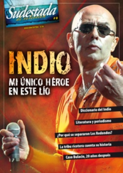

Buscar
Veámoslo un poco con tus ojos
Definiciones, sentencias y ocurrencias de uno de los personajes emblemáticos del rock nacional. Política, coherencias y contradicciones en un diccionario muy particular: el que fue escribiendo el Indio a lo largo de los años. Para la reflexión y la polémica, una ventana abierta al universo Solari.
Edición Especial N° 8
Indio Solari: Mi único héroe en este lío
Sudestada de Colección
Comprar edición impresaSumario
- Veámoslo un poco con tus ojos
- Demonio de lengua de oro
- Esa estrella se agotó, y era mi lujo
- La tribu de mi calle
- Cuando el fuego crezca quiero estar ahí
Compartir Articulo
A
Adivinanzas
"La poesía debe ser sugestiva. Una obra es simbólica. Si lo entendiese de otra forma no haría canciones, sino panfletos o política. Nos dicen que nuestras letras son difíciles, pero yo no veo que los chicos las encuentren difíciles; suena más bien a excusa, para justificar una poesía más llana y sin calidad. Uno hace montajes alegóricos, como adivinanzas, para que el otro juegue y se entusiasme".
(Rolling Stone, diciembre de 2000)
Amargura
"No es una vida fácil la del rocker. Es gente aventurera y de repente, cuando te aventurás demasiado, podés cortar amarras con aquello que te vincula. Hay muchos sinsabores también. De pronto, en algún momento de la carrera (por decirle de alguna manera, porque en realidad no sé qué es), cuando ya sos grande, sentís que te han robado toda la vida y empieza a aparecer una especie de amargura que te va carcomiendo. Los malhumores son generadores de males. Tenés una vida aventurera que en algún momento te aleja de la gente que te sostenía".
(Orsai, agosto de 2012)
Amistad
"Hay cosas que no tienen remedio, es así de simple. La amistad es la amistad, o no es. Si yo te cago a vos con algo, no hay otra manera de verlo. Se acabó, sobre todo cuando depositaste mucho cariño, mucho amor en alguien. La decepción es mucho más grande. Cuando vos crees que alguien es leal, la traición es muy jodida. De los que vos no esperás nada, te importa un queso".
(En relación a sus diferencias con Skay. La Garganta Poderosa, septiembre de 2011)
Artista
"El gran problema es que hoy, aun aquellos que en su momento hicieron experiencias no ordinarias, que les pudieron haber costado la cordura o hasta la vida, siguen recordando esos momentos como hippies estereotipados de una propaganda de Renault. Y no fue así. Me da pena que aquellos que vivieron eso digan que al rock no hay que tomárselo en serio, que uno lo hace para levantarse minas. No está mal levantarse minas, pero que esa sea la razón por la que vos sos un artista... Me parece que no está bien. Son frases ingeniosas, pero... Que una canción no cambia el mundo... No, no cambia el mundo, pero hay canciones que me hicieron cambiar mi mirada sobre el mundo. Que eso no sea posible ahora, está bien, pero me aburre mucho la postura que los artistas tienen hoy. Han aceptado la mirada posmoderna. Y yo creo que hay que estar atentos a las pretensiones de la hipermodernidad. Yo creo que, para que la vida tenga una pulsión, la gente tiene que tener ideales. No todo puede ser cool".
(Rolling Stone, diciembre de 2004)
B
Bulacio
"Vayamos a lo que pasó con Walter y toda esta historia. Nosotros estuvimos en el lugar en que tuvimos que responder. Lo que no podemos es hacer de campana de resonancia de un montón de gente que entra en este tipo de circunstancias con intereses muy particulares y que de pronto empieza a hacer circular una especie de descripción verdadera de las cosas, cuando está totalmente alejada de la intimidad de los hechos. Se nos responsabilizó como que hubiéramos tenido que dar la cara o hacer no sé qué. Y lo hicimos de la manera que lo hicimos, con una carta abierta en una revista. Pero tampoco nos preocupamos por hacer una gran exposición. A lo que voy es a que aquel viejo correo de Los Redondos sigue funcionando. Los Redonditos, momentáneamente, todavía no están tan distraídos. Saben dónde tenemos el corazón".
(Clarín, 11 de octubre de 1991)
La nota completa en la edición especial #8 - Marzo 2013
Comentarios

Sudestada
El colectivo de Revista Sudestada esta integrado por Ignacio Portela, Hugo Montero, Walter Marini, Leandro Albani, Martín Latorraca, Pablo Fernández y Repo Bandini.
Articulos más vistos


LIBRERÍA SUDESTADA

Colección infantil

Distribuidora de Libros

Suscripción

Sudestada en URUGUAY

Otros articulos de esta edición
Demonio de lengua de oro
¿Pueden las letras del Indio ser consideradas una obra literaria que aporta a la construcción de nuestro ser cultural y ...
Esa estrella se agotó, y era mi lujo
Pasa el tiempo y el rezo ricotero sigue siendo el mismo: "Sólo te pido que se vuelvan a juntar". En ...
Cuando el fuego crezca quiero estar ahí
Uno de los rituales imprescindibles de nuestra adolescencia -e incluso adultez-: los recitales de Los Redondos, esas misas paganas donde ...
La tribu de mi calle
"Esto es efímero/ ahora efímero/ como corre el tiempo", cantaba el Indio arriba, entonces, y ahora. Abajo, la tribu deliraba. ...